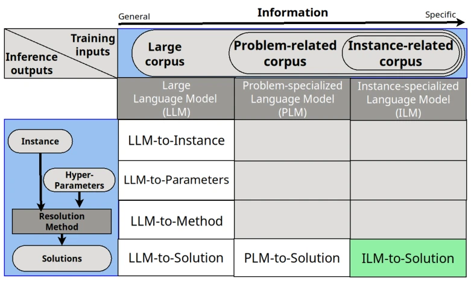
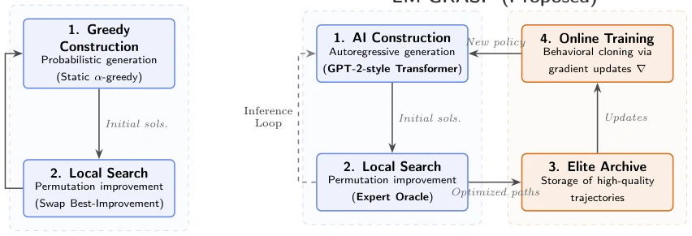
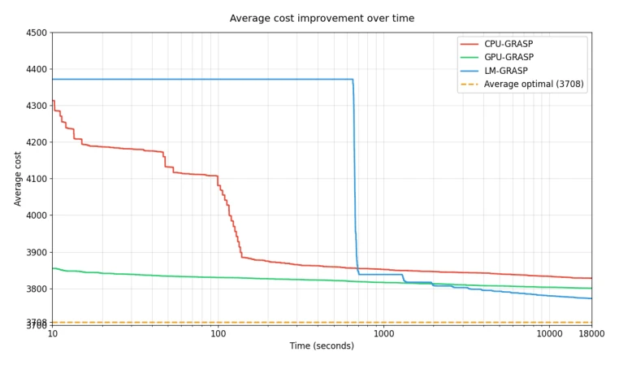
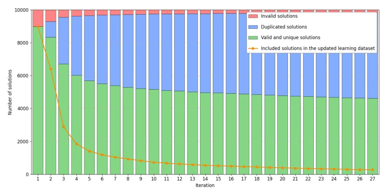
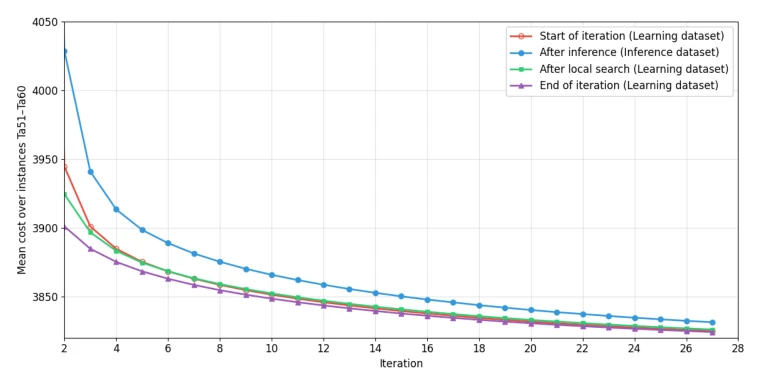

This paper forcibly integrates language models into combinatorial optimization, promoting a gimmick of "online training". LM-GRASP is indeed clever, avoiding offline pre-training and learning directly on instances, thereby saving data costs. However, the trade-off is significant computational overhead and the need to wait for training convergence. The PFSP problem itself is scheduling and has little to do with robots; forcing an Embodied AI label is somewhat contrived. Nevertheless, replacing greedy heuristics with Transformers does break the "short-sighted" bottleneck. Yet, the generalization of this method is questionable; switching to a different problem might require starting from scratch, raising the question of whether this constitutes "train once per instance" overfitting? In summary, the algorithm outperforms hardware, but whether the compute cost is justified depends on the budget. Although this online learning is flexible, requiring retraining each time is simply a disaster for scenarios with high real-time requirements. Furthermore, only scheduling problems were tested, not other NP-hard problems; is it only suitable for permutation spaces like PFSP?
Existing methods either rely on offline pre-training (e.g., [14], [15]), which is costly and suffers from poor generalization, or employ general large models (e.g., [3]), where zero-shot performance collapses on complex problems. Classic GRASP [6] depends on hand-crafted heuristic rules, capable only of viewing local costs and unable to capture global structure. The authors aim to resolve the contradiction between "online" and "instance-specific": adapting to specific instances without incurring high pre-training costs. Existing work mostly focuses on offline data [20], lacking a mechanism to dynamically generate expert trajectories during the search process. This results in the constructor being unable to utilize high-quality solutions discovered during search, limiting the potential of metaheuristics. Particularly for complex instances like 50x20, traditional greedy strategies easily fall into local optima and cannot escape.

Figure 1: Taxonomy of language model-based optimization approaches along two axes: training corpus specialization (columns: generic LM, problem-class PLM, instance-specific ILM) and functional role at inference (rows: instance, parameters, method, solution). The cell highlighted in green (ILM-to-Solution) denotes the configuration introduced in this work: to our knowledge, LM-GRASP is the first method to occupy this cell, training a generative constructor entirely online and from scratch on instance-specific demonstrations, with no external data or offline pretraining.
The core is the LM-GRASP framework, comprising Bootstrap and Learn-Infer-Improve loops. First, Fisher-Yates shuffle is used to generate initial solutions to populate the elite archive. Next, iteration proceeds: (a) online policy optimization, training a Decoder-only Transformer via Behavioral Cloning, with the loss function being causal cross-entropy; (b) autoregressive inference, generating candidate permutations; (c) feasibility and diversity filtering, discarding duplicate or invalid sequences; (d) archive update, retaining elite solutions. The policy network directly outputs job index sequences, requiring no explicit encoding of problem topology. Local search serves as an expert Oracle, optimizing randomly constructed solutions to local optima to form demonstration trajectories. This design allows construction logic to emerge entirely from data-driven mechanisms, replacing static greedy rules. The network architecture adopts a GPT-2 style, with 14 attention layers and 768-dimensional embeddings, ensuring the capture of long-range dependencies.

Figure 2: Structural comparison between classic GPU-GRASP and the proposed LM-GRASP framework. The addition of the third column highlights the autonomous online learning loop, which interfaces seamlessly with the equivalent local search core.
Evaluated on the Taillard benchmark ta51-ta60 (50 jobs/20 machines), with the objective of minimizing makespan. Baselines include CPU-GRASP and GPU-GRASP. Under a 5-hour budget, LM-GRASP achieved an average makespan of 3771.8, outperforming GPU-GRASP's 3800.4, an improvement of 28.4 units, comparable to the 27.2 unit improvement brought by hardware acceleration. LM-GRASP won in all 10 instances. Convergence curves indicate that LM-GRASP invests training time initially but continuously improves later, unlike GPU-GRASP which plateaus quickly. Ablation analysis shows that the online learning strategy effectively captures structural dependencies, outperforming pure random or static heuristics. A V100 GPU was used for hardware to ensure a fair comparison.

Figure 3: Average optimization trajectories over time (log scale) across ta51–ta60 for all three methods. The dashed line marks the average best-known makespan (3708). GPU-GRASP converges to a plateau (≈3800.4) within the first 30 seconds. LM-GRASP spends approximately 660 seconds on bootstrapping and initial policy training, then improves steadily throughout the remaining budget, reaching a mean terminal makespan of 3771.8.

Figure 4: Breakdown of the 10,000-candidate batch by category across iterations. The proportion of novel, archive-improving candidates contracts from ≈8,986 in iteration 1 to ≈299 by iteration 25, while the share of duplicates increases correspondingly. This contraction reflects the natural exhaustion of promising, previously unexplored regions as the search converges.

Figure 5: Intra-iteration makespan at four checkpoints per generation averaged across ta51–ta60: start of iteration (training corpus baseline), after inference, after local search, and end of iteration (archived). The monotonic decrease of end-of-iteration values from ≈3900 to ≈3824 confirms stable convergence of the optimization loop.